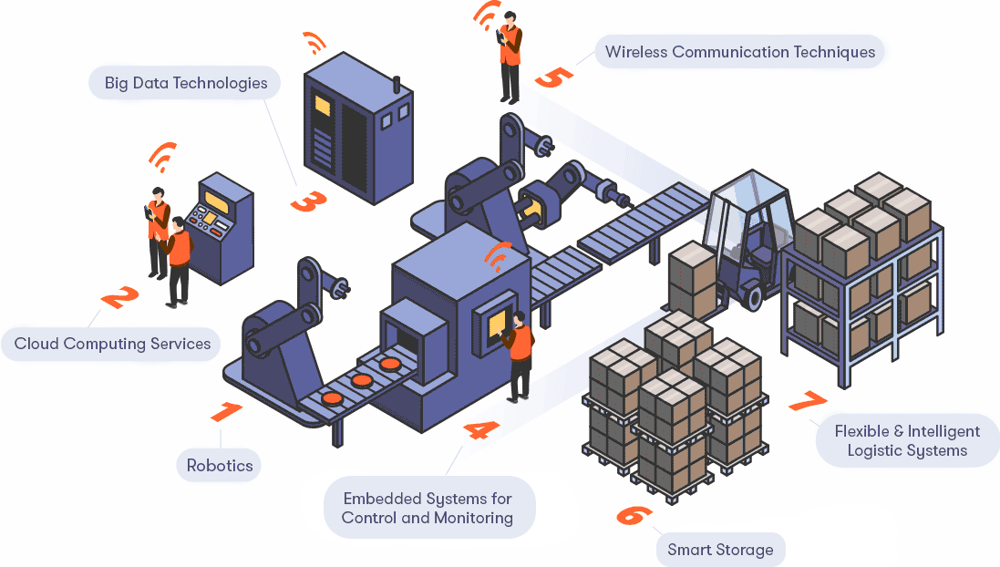
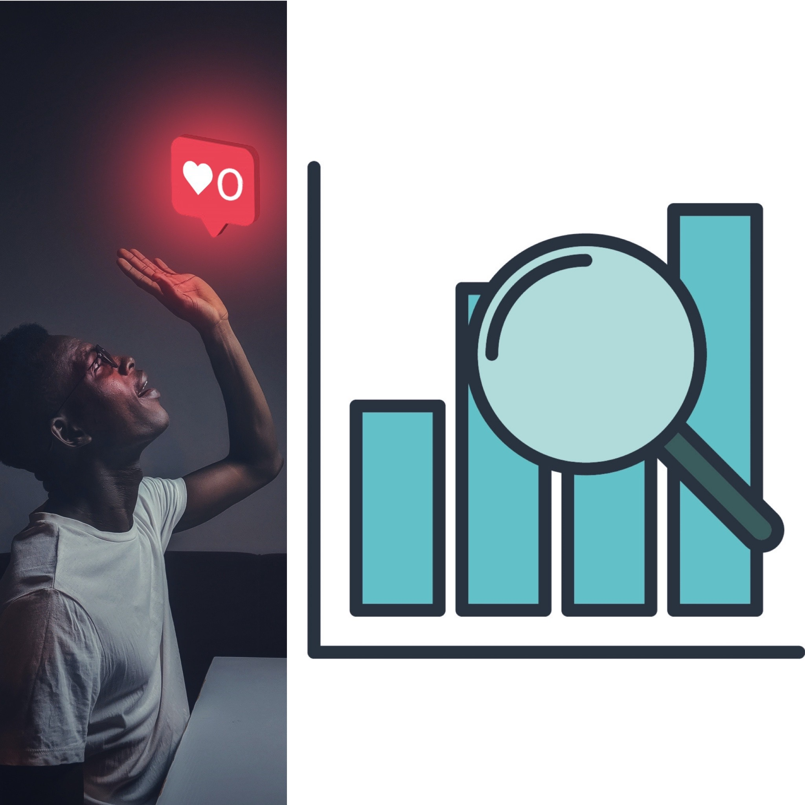

June 2024 – Present
I am a Clinical Application Specialist at Baylor Scott & White Health with a strong focus on applying emerging technologies to healthcare. I specialize in Generative AI and have hands-on experience deploying Microsoft HoloLens 2 to assist pathologists and technicians—enhancing clinical workflows through tools like Remote Assist and Microsoft Guides. I've also led the development of AI-powered diagnostic agents, streamlined pathology workflows using LLMs like GPT-4, and contributed to 3D interactive solutions for clinical decision-making and medical education

In addition, I am actively involved in creating lab-verified custom health-related GPTs across various platforms, contributing to the advancement of diagnostic and treatment methods. My work also extends to health data informatics, where I focus on the extraction, analysis, and practical application of healthcare data to optimize patient outcomes.
With a strong foundation in data analysis, augmented reality technology, and healthcare informatics, I am committed to leveraging my expertise to drive innovation in the medical field.

Feb 2018 – Oct 2019
I am an experienced data analyst with expertise in ETL processes, including extracting machine process parameters from the MES system (Ignition) and transforming data using Excel and Python. I have a track record of successful data loading into MS Azure Data Lake Store. Additionally, I excel in configuring Power BI dashboards for effective data visualization, leading to a 10% increase in plant productivity measured by KPIs.
I have practical knowledge of lean manufacturing principles, KPI implementation, and data analysis for process improvement. My hands-on experience includes using the Keyence IV-H500C vision sensor for rock dimension detection and programming it via Keyence IV-Navigator. I have also commissioned the sensor by integrating it with a Siemens PLC CPU 1515F-2 PN using TIA Portal V13. I am eager to contribute my skills and experiences to future roles, leveraging my expertise in data analytics, ETL, visualization, and controls engineering in manufacturing environments.
During my work on the Copper Wire Production line, I utilized data from the Manufacturing Execution System (MES) to conduct a comprehensive analysis. By performing various processes on the data using SQL and Power BI, I was able to extract useful insights and answer key questions related to downtime. This analysis ultimately provided valuable insights on how to increase production and optimize operations

I conducted an in-depth analysis of Instagram insights and projections using Machine Learning techniques. I utilized libraries such as NumPy, Seaborn, and Sci-Kit to normalize, transform, and train the model. The project generated useful graphical predictions by analyzing various aspects like homepage, hashtags, likes, and impressions. This project demonstrated my expertise in data analysis and machine learning, as well as my ability to draw actionable insights from complex data sets.
I developed a web application using TensorFlow, Keras, and ML classification models (KNN, SVM, LR, NB, AB, and ANN) to differentiate between COVID-19 positive, negative, and infected patients based on CT-scans and X-ray images. The application follows a 3-tier software architecture and includes a graphical user interface, main algorithm, and database to store data.
I developed a movie recommendation software that utilizes machine learning algorithms and filters to analyze a user's previous data and recommend the next movie to watch. The software was built using the language R and implemented various ML classification models such as KNN, SVM, LR, and NB to achieve accurate predictions.